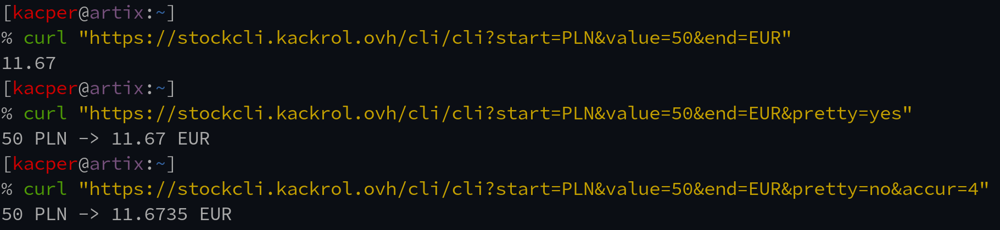

StockCli to proste API którego celem jest możliwość przeliczania walut z poziomu konsoli. Strona główna to także prosta implementacja projektu, która korzystając z mojego api pozwala na dokonania przeliczenia w przeglądarce.
Oprócz wykonywania przeliczeń w przeglądarce można także samemu wysłać zapytanie do strony i otrzymać odpowiednią odpowiedź.
2.1 Najprostrzą metodą jest wykorzystanie napisanego przeze mnie skryptu w pythonie, który można znaleźć wraz z instrukcjami na moim githubie
2.2 Drugim sposobem jest ręczne wysłanie zapytania metodą GET na adres /cli/cli. Można to zrobić zarówno w przeglądarce jak i w specjalnym do tego narzędziu np. curl. W zapytaniu należy uwzględnić następujące parametry :
start - nazwa waluty z której przeliczamy.
value - wartość, którą chcemy przeliczyć.
end - nazwa waluty, którą chcemy przeliczyć.
accur - dokładność przeliczonej wartości po przecinku.*
pretty - dowolny argument powoduje, że odpowiedź od serwera jest czytelniejsza dla oka.*
* Opcjonalne
Zamiana 50 zł na euro.
Taki sam efekt można uzyskać w przeglądarce przechodząc na adres napisany żółtym tekstem. Na przykład.
2.4 Należy pamiętać, aby podać właściwe skróty walut. Dla fiat waluty są z wielkich liter, z kolei dla kryptowalut z małych. Dlaczego? Dużo walut. Łatwiej odróżnić.
Api posiada możliwość przetwarzania 170 walut fiat, a także 100 najpopularniejszych kryptowalut. Całą listę wraz z ich wartościami w USD można zobaczyć na /cli/list
Naturalnie, jako że lista jest w postaci json, można ją ściągać i wykorzystywać na własny użytek, ale -> patrz punkt 4.
W liście znajduję się także wartość "updated", która wskazuje czas ostatniej aktualizacji listy.
Jako, że StockCli powstał wyłącznie jako projekt na studia posiada on pewne ograniczenia:
4.1 Dane odnośnie wartości walut są dostarczane z pewnym opóźnieniem. Zwykłe waluty aktualizują się o pełnych godzinach, z kolei krypto co 5 minut. Jest to związane z wykorzystaniem bezpłatnych api giełdowych, które zostaną podlinkowane poniżej:
coingecko.com4.2 Z tego samego powodu istnieje miesięczny limit zapytań w postaci 1000/miesiąc w przypadku fiat i 10000/miesiąc w przypadku krypto.
Waluty fiat : {{fiatl}}/1000
Kryptowaluty : {{cryptol}}/10000